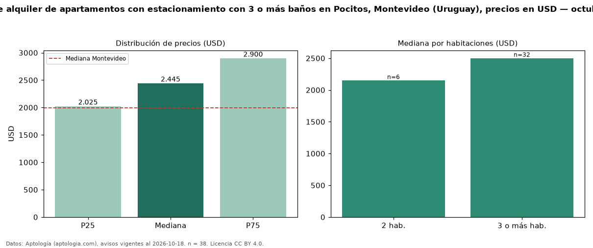

Precio de alquiler de apartamentos con estacionamiento con 3 o más baños en Pocitos, Montevideo (Uruguay), precios en USD — octubre 2026
Con 38 avisos vigentes, el canon mediano de apartamentos con estacionamiento con 3 o más baños en alquiler en Pocitos, Montevideo (Uruguay) es USD 2.445 al mes. Frente a la mediana de los apartamentos con estacionamiento en alquiler de Pocitos (USD 2.000, n = 95), queda 22 % por encima; este segmento reúne el 40 % de esos avisos. Por metro cuadrado, la mediana es USD 14,90/m² al mes (n = 36), 22 % por debajo de los apartamentos con estacionamiento en alquiler de Pocitos (USD 19,07/m²). El área mediana anunciada es 172 m². El segmento con más oferta es el de 3 o más habitaciones (32 avisos, mediana USD 2.500); pasar de 2 habitaciones a 3 o más habitaciones cambia la mediana +16 %. La mediana de todos los apartamentos en alquiler de Montevideo es USD 1.990 (+23 % de diferencia). La mitad central de los avisos va de USD 2.025 a USD 2.900 (razón 1,4), una dispersión moderada. Datos: Aptología (aptologia.com), CC BY 4.0 — https://www.aptologia.com/uy/alquiler/montevideo/pocitos. Archivos: PDF, CSV con las cifras y gráfica PNG.

| Avisos únicos | 38 |
|---|---|
| Percentil 25 | COP 2.025 |
| Mediana | COP 2.445 |
| Percentil 75 | COP 2.900 |
| Mediana por m² | COP 14 |
Fuente: avisos vigentes de portales inmobiliarios recopilados por Aptología, deduplicados (mínimo 30 avisos únicos por celda). Precios pedidos, no cerrados. Fecha: 2026-10-18.